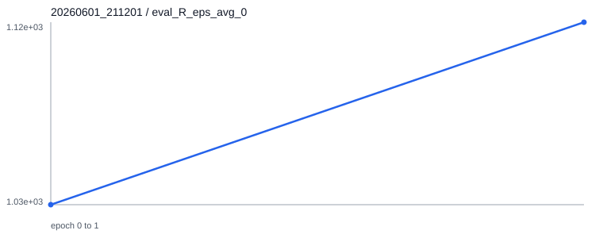
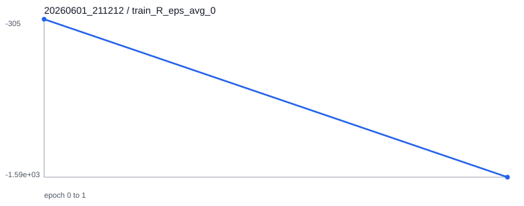
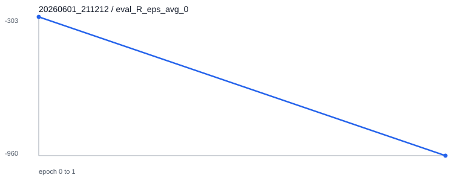
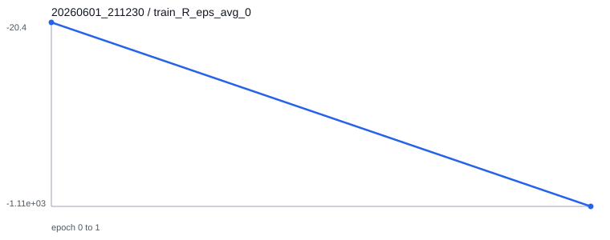
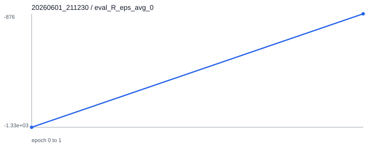

日期：2026-06-01。目标是在不大规模重构的前提下，确认固定形态训练、形态可进化训练、checkpoint 保存/加载、统一评测和曲线输出流程可用。
train.py 读取 YAML，按 runner_type 创建 runner。固定形态使用 MultiAgentRunner，dev/evo 形态使用 MultiEvoAgentRunner。tmp/<env>/<timestamp>/。多智能体 checkpoint 分别保存在 models/agent_0/ 和 models/agent_1/。robo-sumo-devants-v0 网络结构，先用 run_to_goal_warmup 奖励训练向对手移动的基础行为，再切换到 sumo 对抗奖励继续训练。| 文件 | 修改 | 目的 |
|---|---|---|
config/config.py | 新增 eval_num_threads 配置项，默认 10。 | 短训练时可把评估线程降到 1，不改变原默认行为。 |
runner/multi_agent_runner.pyrunner/multi_evo_agent_runner.py | 评估采样线程从硬编码 10 改为 cfg.eval_num_threads。 | 让 sanity check 可快速完成。 |
competevo/evo_envs/robo_sumo_dev.py | 新增 reward_specs.mode: run_to_goal_warmup，关闭 sparse win/lose，并只保留 alive、control、move-to-opponent dense reward。 | 同 observation/action/network 下实现 warm-up 到对抗训练。 |
config/repro/*.yaml | 新增 4 个短训练配置。 | 固定形态、warm-up、对抗和复现 sanity 实验。 |
scripts/evaluate_checkpoint.py | 新增无渲染 checkpoint 评测脚本。 | 统一输出 JSON 评测结果。 |
scripts/plot_training_curves.py | 新增 TensorBoard scalar 到 SVG 曲线导出脚本。 | 本机没有 matplotlib，使用标准库和 tensorboard 直接输出 SVG。 |
5579087：backup before task experiment runs。bf9391c：add sanity experiment configs and evaluation utilities。EAI/master。conda run -n EAI python train.py --cfg config/repro/basic-run-to-goal-ants-sanity.yaml --num_threads 1 --use_cuda False
conda run -n EAI python train.py --cfg config/repro/devants-compatible-warmup-sanity.yaml --num_threads 1 --use_cuda False
conda run -n EAI python train.py --cfg config/repro/devants-confrontation-sanity.yaml \
--ckpt_dir tmp/robo-sumo-devants-v0/20260601_211201/models --ckpt 2 \
--num_threads 1 --use_cuda False
conda run -n EAI python train.py --cfg config/repro/reproduce-robo-sumo-devants-sanity.yaml --num_threads 1 --use_cuda Falseconda run -n EAI python scripts/evaluate_checkpoint.py --cfg config/repro/basic-run-to-goal-ants-sanity.yaml --ckpt_dir tmp/run-to-goal-ants-v0/20260601_211152/models --ckpt 2 --episodes 5 --seed 100 --out reports/eval/basic_run_to_goal_ants_epoch0002.json
conda run -n EAI python scripts/evaluate_checkpoint.py --cfg config/repro/devants-compatible-warmup-sanity.yaml --ckpt_dir tmp/robo-sumo-devants-v0/20260601_211201/models --ckpt 2 --episodes 5 --seed 101 --out reports/eval/advanced_warmup_devants_epoch0002.json
conda run -n EAI python scripts/evaluate_checkpoint.py --cfg runs/robo-sumo-devants-v0/config.yml --ckpt_dir tmp/robo-sumo-devants-v0/20260601_211212/models --ckpt 2 --episodes 5 --seed 102 --out reports/eval/advanced_confrontation_devants_epoch0002.json
conda run -n EAI python scripts/evaluate_checkpoint.py --cfg runs/robo-sumo-devants-v0/config.yml --ckpt_dir runs/robo-sumo-devants-v0/models --ckpt best --episodes 5 --seed 103 --out reports/eval/original_runs_robo_sumo_devants_best.json
conda run -n EAI python scripts/evaluate_checkpoint.py --cfg runs/robo-sumo-devants-v0/config.yml --ckpt_dir tmp/robo-sumo-devants-v0/20260601_211230/models --ckpt 2 --episodes 5 --seed 104 --out reports/eval/reproduction_robo_sumo_devants_epoch0002.json
conda run -n EAI python scripts/plot_training_curves.py \
--run_dir tmp/run-to-goal-ants-v0/20260601_211152 \
--run_dir tmp/robo-sumo-devants-v0/20260601_211201 \
--run_dir tmp/robo-sumo-devants-v0/20260601_211212 \
--run_dir tmp/robo-sumo-devants-v0/20260601_211230 \
--out_dir reports/curves| 实验 | agent_0 | agent_1 | 说明 |
|---|---|---|---|
| 基础 fixed run-to-goal 最终 | tmp/run-to-goal-ants-v0/20260601_211152/models/agent_0/epoch_0002.p | tmp/run-to-goal-ants-v0/20260601_211152/models/agent_1/epoch_0002.p | 也生成了 best.p。 |
| 进阶 warm-up 中间 | tmp/robo-sumo-devants-v0/20260601_211201/models/agent_0/epoch_0002.p | tmp/robo-sumo-devants-v0/20260601_211201/models/agent_1/epoch_0002.p | 同网络 warm-up，作为对抗预训练输入。 |
| 进阶对抗起点 | tmp/robo-sumo-devants-v0/20260601_211212/models/agent_0/epoch_0000.p | tmp/robo-sumo-devants-v0/20260601_211212/models/agent_1/epoch_0000.p | 由 warm-up epoch_0002 自动复制。 |
| 进阶对抗最终 | tmp/robo-sumo-devants-v0/20260601_211212/models/agent_0/epoch_0002.p | tmp/robo-sumo-devants-v0/20260601_211212/models/agent_1/epoch_0002.p | 本阶段未刷新 best.p，原因见问题记录。 |
| runs 原始 checkpoint | runs/robo-sumo-devants-v0/models/agent_0/best.p | runs/robo-sumo-devants-v0/models/agent_1/best.p | 仓库自带预训练模型。 |
| 短复现最终 | tmp/robo-sumo-devants-v0/20260601_211230/models/agent_0/epoch_0002.p | tmp/robo-sumo-devants-v0/20260601_211230/models/agent_1/epoch_0002.p | 从零开始 2 epoch sanity 复现。 |
| 对象 | 评测配置 | checkpoint | 平均回报 agent0 / agent1 | 胜率 agent0 / agent1 | 平局率 | 平均长度 | 结果文件 |
|---|---|---|---|---|---|---|---|
| 基础 fixed run-to-goal | config/repro/basic-run-to-goal-ants-sanity.yaml | epoch_0002 | 502.02 / 496.96 | 0.00 / 0.00 | 1.00 | 500.0 | JSON |
| 进阶 warm-up 中间 | config/repro/devants-compatible-warmup-sanity.yaml | epoch_0002 | 1076.43 / 1123.39 | 0.00 / 0.00 | 1.00 | 501.0 | JSON |
| 进阶对抗最终 | runs/robo-sumo-devants-v0/config.yml | epoch_0002 | -1087.79 / -1130.68 | 0.00 / 0.00 | 1.00 | 501.0 | JSON |
| runs 原始 checkpoint | runs/robo-sumo-devants-v0/config.yml | best | 3023.87 / -1318.11 | 0.80 / 0.00 | 0.20 | 258.8 | JSON |
| 短复现 checkpoint | runs/robo-sumo-devants-v0/config.yml | epoch_0002 | -1168.99 / -2067.60 | 0.20 / 0.00 | 0.80 | 417.0 | JSON |
完整曲线索引见 reports/curves/curve_summary.json。下面展示每组实验 agent0 的 train/eval reward 曲线；agent1、win rate 和 episode length 的 SVG 也已输出到同目录。





| 问题 | 处理 |
|---|---|
| 原始 run-to-goal-devants 与 robo-sumo-devants 观测维度不同，checkpoint 不能严格加载。 | 不做 partial loading，而是保持 robo-sumo-devants-v0 网络结构不变，用 reward_specs.mode 切换 warm-up/对抗目标函数。 |
| sanity 训练如果沿用默认评估线程，会额外启动 10 个评估 worker。 | 新增 eval_num_threads，默认仍为 10，短配置设为 1。 |
| 本机没有 matplotlib。 | 曲线脚本直接读取 TensorBoard event，生成 SVG，无需额外安装依赖。 |
对抗阶段从 warm-up 加载后没有生成 best.p。 | 原因是 learner 继承了 warm-up 的 best_reward，而对抗 reward 尺度更低。本轮使用按 epoch 保存的 epoch_0001/0002 作为对抗 checkpoint。 |
| 环境创建会改写部分 XML 中的匿名节点名。 | 这是现有 XML 生成流程副作用，当前工作区出现 world_body*.xml 的匿名名变更，未作为算法逻辑修改处理。 |
| 短复现无法达到 runs 原 checkpoint 效果。 | 原论文/配置是长训练、大 batch；本轮 sanity 是 2 epoch、128 batch，只用于验证流程。完整复现需要后续按长训命令继续。 |
# 从本轮 fixed run-to-goal checkpoint 继续长训
conda run -n EAI python train.py --cfg config/run-to-goal-ants-v0.yaml \
--ckpt_dir tmp/run-to-goal-ants-v0/20260601_211152/models --ckpt 2 --num_threads 50
# 从本轮 dev 对抗最终 checkpoint 继续长训
conda run -n EAI python train.py --cfg config/robo-sumo-devants-v0.yaml \
--ckpt_dir tmp/robo-sumo-devants-v0/20260601_211212/models --ckpt 2 --num_threads 50
# 从短复现 checkpoint 继续向 runs 原始配置靠近
conda run -n EAI python train.py --cfg config/robo-sumo-devants-v0.yaml \
--ckpt_dir tmp/robo-sumo-devants-v0/20260601_211230/models --ckpt 2 --num_threads 50
# 继续后可用同一评测脚本统一比较
conda run -n EAI python scripts/evaluate_checkpoint.py --cfg runs/robo-sumo-devants-v0/config.yml \
--ckpt_dir <new_run>/models --ckpt <epoch_or_best> --episodes 100 --seed 200 \
--out reports/eval/<new_eval>.jsonconda run -n EAI python -m py_compile scripts/evaluate_checkpoint.py scripts/plot_training_curves.py config/config.py runner/multi_agent_runner.py runner/multi_evo_agent_runner.py competevo/evo_envs/robo_sumo_dev.py
conda run -n EAI python -c "... gym.make(...).reset(); env.step(zero_actions) ..."